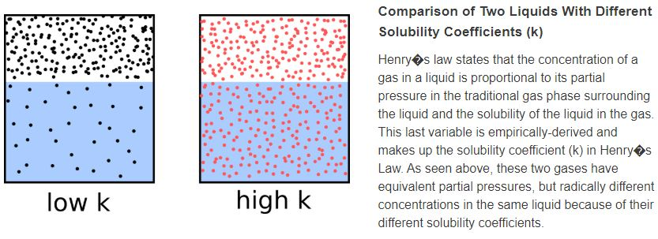
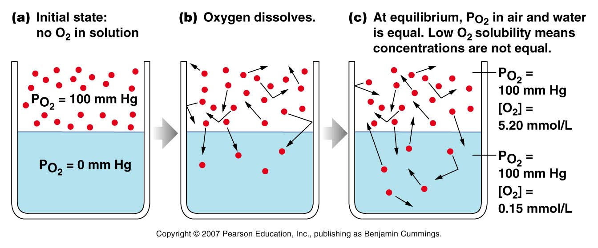
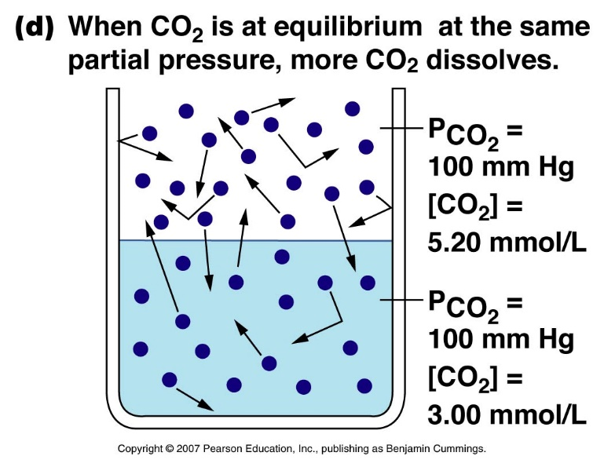

- Physics of Gas Pressures 3
- Henry’s Law: C = kP
- Concentration of gas in liquid = solubility x partial pressure in liquid.
- At equilibrium, partial pressure is equal on both gas and liquid sides, but # of molecules varies depending on solubility of the gas.
- Partial pressure of each gas is the same for both.
